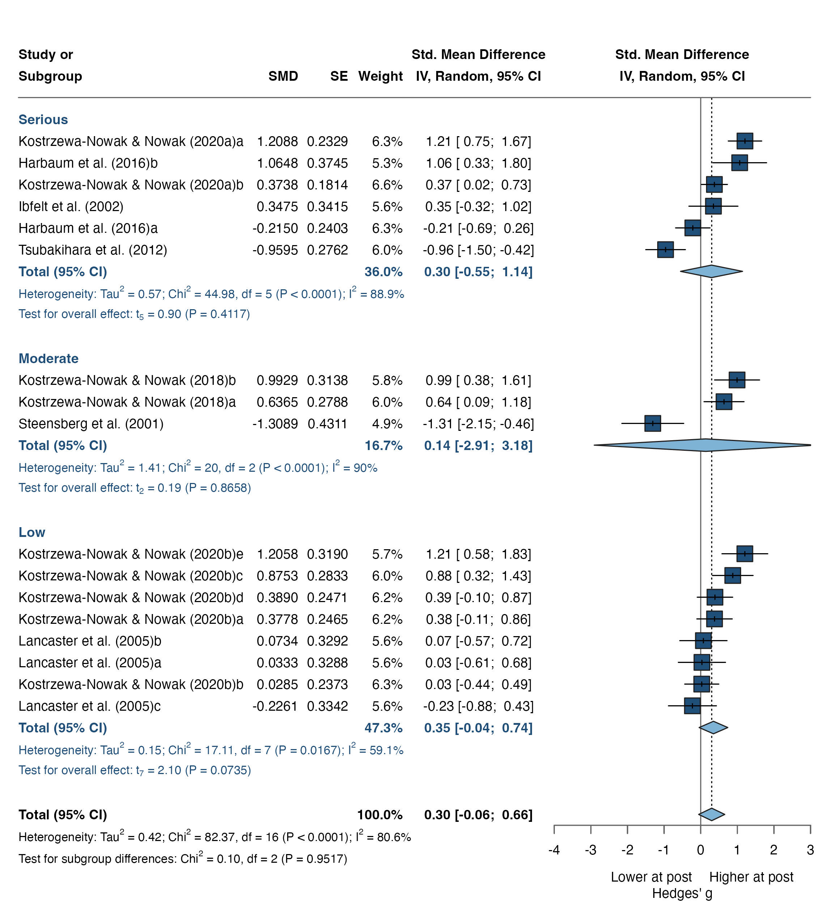
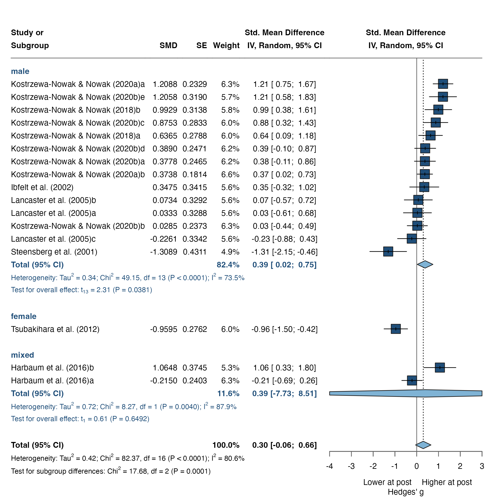
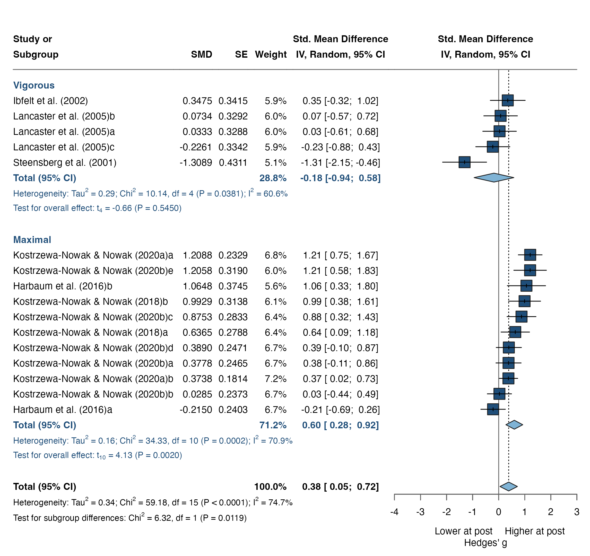

| Effect size file | k | g | 95% CI | p | τ² | I² | 95% PI |
|---|---|---|---|---|---|---|---|
| r = .30 | 17 | 0.31 | [-0.05; 0.67] | .088 | 0.41 | 73.6% | [-1.10; 1.72] |
| r = .40 | 17 | 0.31 | [-0.05; 0.67] | .091 | 0.41 | 77.1% | [-1.11; 1.72] |
| r = .50 (main) | 17 | 0.30 | [-0.06; 0.66] | .093 | 0.42 | 80.6% | [-1.11; 1.71] |
| r = .60 | 17 | 0.29 | [-0.06; 0.64] | .094 | 0.41 | 84.1% | [-1.11; 1.70] |
| r = .70 | 17 | 0.29 | [-0.06; 0.63] | .095 | 0.40 | 87.6% | [-1.09; 1.66] |
10 TH1/TH2 ratio - Immediately post-exercise
Summary
10.1 Overview
Based on: M1 - Primary - k = 17
10.2 Model Overview
| Model | Excluded | k | g | 95% CI | p | τ² | I² | Status |
|---|---|---|---|---|---|---|---|---|
| M0 - Full | - | 18 | 0.35 | [-0.06; 0.77] | .089 | 0.91 | 80.5% | |
| M1 - Primary | Kostrzewa-Nowak et al. (2019) | 17 | 0.30 | [-0.06; 0.66] | .093 | 0.42 | 80.6% | Reported |
Analysis
Ratio_pre_post_r_050.csvModerators - r = .5010.3 Data Import
The base analysis uses the pre-computed Hedges’ g file for the Th1/Th2 ratio at r = 0.5 (effect_size/Ratio/pre_post/Ratio_pre_post_r_050.csv). Sensitivity analyses can substitute the r = 0.3 / 0.4 / 0.6 / 0.7 files in the same folder. The pipeline column names are mapped to the analysis conventions (VE_g, Sex, Age, BMI) by load_es().
10.4 Primary Meta-Analysis
metagen() fits a random-effects model on the pre-computed effect sizes (g, SE_g) using the Hedges-Olkin (HE) τ² estimator and the Knapp-Hartung small-sample correction (hakn = TRUE). Kostrzewa-Nowak et al. (2019) is removed before pooling and the model re-fitted; metafor::rma() cross-validates.
Based on: M0 - Full - k = 18
| Parameter | Estimate | 95% CI | Test |
|---|---|---|---|
| Pooled effect | |||
| k | 18 | ||
| Hedges' g (random effects) | 0.35 | [-0.06; 0.76] | t(17) = 1.80, p = .090 |
| Prediction interval | [-1.72; 2.42] | ||
| Heterogeneity | |||
| τ² | 0.91 | [0.16; 1.51] | |
| τ | 0.95 | [0.40; 1.23] | |
| I² | 73.4% | [57.7%; 83.3%] | |
| H | 1.94 | [1.54; 2.45] | |
| Q | 64.00 | df = 17, p < .001 | |
| Note. Random effects, inverse variance; τ² estimator: HE; CI: HK. Bold: p < .05. | |||
R output
Number of studies: k = 18
SMD 95% CI t p-value
Random effects model (HK) 0.3501 [-0.0611; 0.7612] 1.80 0.0902
Prediction interval [-1.7234; 2.4235]
Quantifying heterogeneity (with 95% CIs):
tau^2 = 0.9060 [0.1622; 1.5110]; tau = 0.9518 [0.4028; 1.2292]
I^2 = 73.4% [57.7%; 83.3%]; H = 1.94 [1.54; 2.45]
Test of heterogeneity:
Q d.f. p-value
64.00 17 < 0.0001
Details of meta-analysis methods:
- Inverse variance method
- Hedges estimator for tau^2
- Q-Profile method for confidence interval of tau^2 and tau
- Calculation of I^2 based on Q
- Hartung-Knapp adjustment for random effects model (df = 17)
- Prediction interval based on t-distribution (df = 17)Based on: M0 - Full - k = 18
| Parameter | Estimate | 95% CI | Test |
|---|---|---|---|
| Pooled effect | |||
| k | 18 | ||
| Estimate | 0.35 | [-0.06; 0.76] | z = 1.80, p = .090 |
| Heterogeneity | |||
| τ² | 0.91 | ||
| I² | 88.7% | ||
| H² | 8.86 | ||
| Q | 64.00 | df = 17, p < .001 | |
| Note. Bold: p < .05. | |||
R output
Random-Effects Model (k = 18; tau^2 estimator: HE)
tau^2 (estimated amount of total heterogeneity): 0.9060 (SE = 0.5043)
tau (square root of estimated tau^2 value): 0.9518
I^2 (total heterogeneity / total variability): 88.72%
H^2 (total variability / sampling variability): 8.86
Test for Heterogeneity:
Q(df = 17) = 64.0047, p-val < .0001
Model Results:
estimate se tval df pval ci.lb ci.ub
0.3501 0.1949 1.7964 17 0.0902 -0.0611 0.7612 .
---
Signif. codes: 0 '***' 0.001 '**' 0.01 '*' 0.05 '.' 0.1 ' ' 1
Based on: M1 - Primary - k = 17
| Parameter | Estimate | 95% CI | Test |
|---|---|---|---|
| Pooled effect | |||
| k | 17 | ||
| Hedges' g (random effects) | 0.31 | [-0.05; 0.67] | t(16) = 1.81, p = .088 |
| Prediction interval | [-1.10; 1.72] | ||
| Heterogeneity | |||
| τ² | 0.41 | [0.14; 1.08] | |
| τ | 0.64 | [0.38; 1.04] | |
| I² | 73.6% | [57.3%; 83.7%] | |
| H | 1.95 | [1.53; 2.47] | |
| Q | 60.58 | df = 16, p < .001 | |
| Note. Random effects, inverse variance; τ² estimator: HE; CI: HK. Bold: p < .05. | |||
R output
Number of studies: k = 17
SMD 95% CI t p-value
Random effects model (HK) 0.3108 [-0.0523; 0.6739] 1.81 0.0884
Prediction interval [-1.0978; 1.7194]
Quantifying heterogeneity (with 95% CIs):
tau^2 = 0.4102 [0.1415; 1.0762]; tau = 0.6404 [0.3762; 1.0374]
I^2 = 73.6% [57.3%; 83.7%]; H = 1.95 [1.53; 2.47]
Test of heterogeneity:
Q d.f. p-value
60.58 16 < 0.0001
Details of meta-analysis methods:
- Inverse variance method
- Hedges estimator for tau^2
- Q-Profile method for confidence interval of tau^2 and tau
- Calculation of I^2 based on Q
- Hartung-Knapp adjustment for random effects model (df = 16)
- Prediction interval based on t-distribution (df = 16)Based on: M0 - Full - k = 18
| Parameter | Estimate | 95% CI | Test |
|---|---|---|---|
| Pooled effect | |||
| k | 18 | ||
| Hedges' g (random effects) | 0.35 | [-0.06; 0.77] | t(17) = 1.80, p = .090 |
| Prediction interval | [-1.73; 2.43] | ||
| Heterogeneity | |||
| τ² | 0.91 | [0.18; 1.56] | |
| τ | 0.96 | [0.43; 1.25] | |
| I² | 77.0% | [63.9%; 85.3%] | |
| H | 2.08 | [1.66; 2.61] | |
| Q | 73.77 | df = 17, p < .001 | |
| Note. Random effects, inverse variance; τ² estimator: HE; CI: HK. Bold: p < .05. | |||
R output
Number of studies: k = 18
SMD 95% CI t p-value
Random effects model (HK) 0.3520 [-0.0611; 0.7650] 1.80 0.0900
Prediction interval [-1.7296; 2.4336]
Quantifying heterogeneity (with 95% CIs):
tau^2 = 0.9143 [0.1826; 1.5582]; tau = 0.9562 [0.4273; 1.2483]
I^2 = 77.0% [63.9%; 85.3%]; H = 2.08 [1.66; 2.61]
Test of heterogeneity:
Q d.f. p-value
73.77 17 < 0.0001
Details of meta-analysis methods:
- Inverse variance method
- Hedges estimator for tau^2
- Q-Profile method for confidence interval of tau^2 and tau
- Calculation of I^2 based on Q
- Hartung-Knapp adjustment for random effects model (df = 17)
- Prediction interval based on t-distribution (df = 17)Based on: M0 - Full - k = 18
| Parameter | Estimate | 95% CI | Test |
|---|---|---|---|
| Pooled effect | |||
| k | 18 | ||
| Estimate | 0.35 | [-0.06; 0.77] | z = 1.80, p = .090 |
| Heterogeneity | |||
| τ² | 0.91 | ||
| I² | 90.3% | ||
| H² | 10.29 | ||
| Q | 73.77 | df = 17, p < .001 | |
| Note. Bold: p < .05. | |||
R output
Random-Effects Model (k = 18; tau^2 estimator: HE)
tau^2 (estimated amount of total heterogeneity): 0.9143 (SE = 0.4653)
tau (square root of estimated tau^2 value): 0.9562
I^2 (total heterogeneity / total variability): 90.28%
H^2 (total variability / sampling variability): 10.29
Test for Heterogeneity:
Q(df = 17) = 73.7742, p-val < .0001
Model Results:
estimate se tval df pval ci.lb ci.ub
0.3520 0.1958 1.7979 17 0.0900 -0.0611 0.7650 .
---
Signif. codes: 0 '***' 0.001 '**' 0.01 '*' 0.05 '.' 0.1 ' ' 1
Based on: M1 - Primary - k = 17
| Parameter | Estimate | 95% CI | Test |
|---|---|---|---|
| Pooled effect | |||
| k | 17 | ||
| Hedges' g (random effects) | 0.31 | [-0.05; 0.67] | t(16) = 1.80, p = .091 |
| Prediction interval | [-1.11; 1.72] | ||
| Heterogeneity | |||
| τ² | 0.41 | [0.16; 1.07] | |
| τ | 0.64 | [0.40; 1.03] | |
| I² | 77.1% | [63.6%; 85.6%] | |
| H | 2.09 | [1.66; 2.63] | |
| Q | 69.80 | df = 16, p < .001 | |
| Note. Random effects, inverse variance; τ² estimator: HE; CI: HK. Bold: p < .05. | |||
R output
Number of studies: k = 17
SMD 95% CI t p-value
Random effects model (HK) 0.3060 [-0.0544; 0.6664] 1.80 0.0907
Prediction interval [-1.1087; 1.7208]
Quantifying heterogeneity (with 95% CIs):
tau^2 = 0.4148 [0.1567; 1.0698]; tau = 0.6440 [0.3959; 1.0343]
I^2 = 77.1% [63.6%; 85.6%]; H = 2.09 [1.66; 2.63]
Test of heterogeneity:
Q d.f. p-value
69.80 16 < 0.0001
Details of meta-analysis methods:
- Inverse variance method
- Hedges estimator for tau^2
- Q-Profile method for confidence interval of tau^2 and tau
- Calculation of I^2 based on Q
- Hartung-Knapp adjustment for random effects model (df = 16)
- Prediction interval based on t-distribution (df = 16)Based on: M0 - Full - k = 18
| Parameter | Estimate | 95% CI | Test |
|---|---|---|---|
| Pooled effect | |||
| k | 18 | ||
| Hedges' g (random effects) | 0.35 | [-0.06; 0.77] | t(17) = 1.81, p = .089 |
| Prediction interval | [-1.72; 2.43] | ||
| Heterogeneity | |||
| τ² | 0.91 | [0.20; 1.60] | |
| τ | 0.95 | [0.45; 1.26] | |
| I² | 80.5% | [70.0%; 87.3%] | |
| H | 2.26 | [1.83; 2.81] | |
| Q | 87.11 | df = 17, p < .001 | |
| Note. Random effects, inverse variance; τ² estimator: HE; CI: HK. Bold: p < .05. | |||
R output
Number of studies: k = 18
SMD 95% CI t p-value
Random effects model (HK) 0.3544 [-0.0597; 0.7685] 1.81 0.0887
Prediction interval [-1.7206; 2.4294]
Quantifying heterogeneity (with 95% CIs):
tau^2 = 0.9096 [0.2029; 1.5996]; tau = 0.9537 [0.4504; 1.2647]
I^2 = 80.5% [70.0%; 87.3%]; H = 2.26 [1.83; 2.81]
Test of heterogeneity:
Q d.f. p-value
87.11 17 < 0.0001
Details of meta-analysis methods:
- Inverse variance method
- Hedges estimator for tau^2
- Q-Profile method for confidence interval of tau^2 and tau
- Calculation of I^2 based on Q
- Hartung-Knapp adjustment for random effects model (df = 17)
- Prediction interval based on t-distribution (df = 17)Based on: M0 - Full - k = 18
| Parameter | Estimate | 95% CI | Test |
|---|---|---|---|
| Pooled effect | |||
| k | 18 | ||
| Estimate | 0.35 | [-0.06; 0.77] | z = 1.81, p = .089 |
| Heterogeneity | |||
| τ² | 0.91 | ||
| I² | 91.8% | ||
| H² | 12.15 | ||
| Q | 87.11 | df = 17, p < .001 | |
| Note. Bold: p < .05. | |||
R output
Random-Effects Model (k = 18; tau^2 estimator: HE)
tau^2 (estimated amount of total heterogeneity): 0.9096 (SE = 0.4257)
tau (square root of estimated tau^2 value): 0.9537
I^2 (total heterogeneity / total variability): 91.77%
H^2 (total variability / sampling variability): 12.15
Test for Heterogeneity:
Q(df = 17) = 87.1136, p-val < .0001
Model Results:
estimate se tval df pval ci.lb ci.ub
0.3544 0.1963 1.8055 17 0.0887 -0.0597 0.7685 .
---
Signif. codes: 0 '***' 0.001 '**' 0.01 '*' 0.05 '.' 0.1 ' ' 1
Based on: M1 - Primary - k = 17
| Parameter | Estimate | 95% CI | Test |
|---|---|---|---|
| Pooled effect | |||
| k | 17 | ||
| Hedges' g (random effects) | 0.30 | [-0.06; 0.66] | t(16) = 1.79, p = .093 |
| Prediction interval | [-1.11; 1.71] | ||
| Heterogeneity | |||
| τ² | 0.42 | [0.17; 1.05] | |
| τ | 0.64 | [0.41; 1.03] | |
| I² | 80.6% | [69.8%; 87.5%] | |
| H | 2.27 | [1.82; 2.83] | |
| Q | 82.37 | df = 16, p < .001 | |
| Note. Random effects, inverse variance; τ² estimator: HE; CI: HK. Bold: p < .05. | |||
R output
Number of studies: k = 17
SMD 95% CI t p-value
Random effects model (HK) 0.3005 [-0.0558; 0.6568] 1.79 0.0928
Prediction interval [-1.1139; 1.7149]
Quantifying heterogeneity (with 95% CIs):
tau^2 = 0.4156 [0.1703; 1.0546]; tau = 0.6447 [0.4126; 1.0270]
I^2 = 80.6% [69.8%; 87.5%]; H = 2.27 [1.82; 2.83]
Test of heterogeneity:
Q d.f. p-value
82.37 16 < 0.0001
Details of meta-analysis methods:
- Inverse variance method
- Hedges estimator for tau^2
- Q-Profile method for confidence interval of tau^2 and tau
- Calculation of I^2 based on Q
- Hartung-Knapp adjustment for random effects model (df = 16)
- Prediction interval based on t-distribution (df = 16)Based on: M0 - Full - k = 18
| Parameter | Estimate | 95% CI | Test |
|---|---|---|---|
| Pooled effect | |||
| k | 18 | ||
| Hedges' g (random effects) | 0.36 | [-0.06; 0.77] | t(17) = 1.82, p = .086 |
| Prediction interval | [-1.69; 2.40] | ||
| Heterogeneity | |||
| τ² | 0.89 | [0.22; 1.62] | |
| τ | 0.94 | [0.47; 1.27] | |
| I² | 84.0% | [76.0%; 89.4%] | |
| H | 2.50 | [2.04; 3.07] | |
| Q | 106.45 | df = 17, p < .001 | |
| Note. Random effects, inverse variance; τ² estimator: HE; CI: HK. Bold: p < .05. | |||
R output
Number of studies: k = 18
SMD 95% CI t p-value
Random effects model (HK) 0.3570 [-0.0563; 0.7703] 1.82 0.0861
Prediction interval [-1.6897; 2.4036]
Quantifying heterogeneity (with 95% CIs):
tau^2 = 0.8859 [0.2226; 1.6241]; tau = 0.9412 [0.4718; 1.2744]
I^2 = 84.0% [76.0%; 89.4%]; H = 2.50 [2.04; 3.07]
Test of heterogeneity:
Q d.f. p-value
106.45 17 < 0.0001
Details of meta-analysis methods:
- Inverse variance method
- Hedges estimator for tau^2
- Q-Profile method for confidence interval of tau^2 and tau
- Calculation of I^2 based on Q
- Hartung-Knapp adjustment for random effects model (df = 17)
- Prediction interval based on t-distribution (df = 17)Based on: M0 - Full - k = 18
| Parameter | Estimate | 95% CI | Test |
|---|---|---|---|
| Pooled effect | |||
| k | 18 | ||
| Estimate | 0.36 | [-0.06; 0.77] | z = 1.82, p = .086 |
| Heterogeneity | |||
| τ² | 0.89 | ||
| I² | 93.2% | ||
| H² | 14.67 | ||
| Q | 106.45 | df = 17, p < .001 | |
| Note. Bold: p < .05. | |||
R output
Random-Effects Model (k = 18; tau^2 estimator: HE)
tau^2 (estimated amount of total heterogeneity): 0.8859 (SE = 0.3839)
tau (square root of estimated tau^2 value): 0.9412
I^2 (total heterogeneity / total variability): 93.18%
H^2 (total variability / sampling variability): 14.67
Test for Heterogeneity:
Q(df = 17) = 106.4524, p-val < .0001
Model Results:
estimate se tval df pval ci.lb ci.ub
0.3570 0.1959 1.8222 17 0.0861 -0.0563 0.7703 .
---
Signif. codes: 0 '***' 0.001 '**' 0.01 '*' 0.05 '.' 0.1 ' ' 1
Based on: M1 - Primary - k = 17
| Parameter | Estimate | 95% CI | Test |
|---|---|---|---|
| Pooled effect | |||
| k | 17 | ||
| Hedges' g (random effects) | 0.29 | [-0.06; 0.64] | t(16) = 1.78, p = .094 |
| Prediction interval | [-1.11; 1.70] | ||
| Heterogeneity | |||
| τ² | 0.41 | [0.18; 1.03] | |
| τ | 0.64 | [0.43; 1.01] | |
| I² | 84.1% | [75.8%; 89.5%] | |
| H | 2.51 | [2.03; 3.09] | |
| Q | 100.57 | df = 16, p < .001 | |
| Note. Random effects, inverse variance; τ² estimator: HE; CI: HK. Bold: p < .05. | |||
R output
Number of studies: k = 17
SMD 95% CI t p-value
Random effects model (HK) 0.2937 [-0.0563; 0.6438] 1.78 0.0943
Prediction interval [-1.1109; 1.6984]
Quantifying heterogeneity (with 95% CIs):
tau^2 = 0.4108 [0.1810; 1.0263]; tau = 0.6409 [0.4254; 1.0131]
I^2 = 84.1% [75.8%; 89.5%]; H = 2.51 [2.03; 3.09]
Test of heterogeneity:
Q d.f. p-value
100.57 16 < 0.0001
Details of meta-analysis methods:
- Inverse variance method
- Hedges estimator for tau^2
- Q-Profile method for confidence interval of tau^2 and tau
- Calculation of I^2 based on Q
- Hartung-Knapp adjustment for random effects model (df = 16)
- Prediction interval based on t-distribution (df = 16)Based on: M0 - Full - k = 18
| Parameter | Estimate | 95% CI | Test |
|---|---|---|---|
| Pooled effect | |||
| k | 18 | ||
| Hedges' g (random effects) | 0.36 | [-0.05; 0.77] | t(17) = 1.85, p = .081 |
| Prediction interval | [-1.62; 2.34] | ||
| Heterogeneity | |||
| τ² | 0.83 | [0.24; 1.61] | |
| τ | 0.91 | [0.49; 1.27] | |
| I² | 87.6% | [81.9%; 91.5%] | |
| H | 2.84 | [2.35; 3.43] | |
| Q | 137.12 | df = 17, p < .001 | |
| Note. Random effects, inverse variance; τ² estimator: HE; CI: HK. Bold: p < .05. | |||
R output
Number of studies: k = 18
SMD 95% CI t p-value
Random effects model (HK) 0.3590 [-0.0496; 0.7676] 1.85 0.0812
Prediction interval [-1.6244; 2.3424]
Quantifying heterogeneity (with 95% CIs):
tau^2 = 0.8330 [0.2406; 1.6077]; tau = 0.9127 [0.4905; 1.2680]
I^2 = 87.6% [81.9%; 91.5%]; H = 2.84 [2.35; 3.43]
Test of heterogeneity:
Q d.f. p-value
137.12 17 < 0.0001
Details of meta-analysis methods:
- Inverse variance method
- Hedges estimator for tau^2
- Q-Profile method for confidence interval of tau^2 and tau
- Calculation of I^2 based on Q
- Hartung-Knapp adjustment for random effects model (df = 17)
- Prediction interval based on t-distribution (df = 17)Based on: M0 - Full - k = 18
| Parameter | Estimate | 95% CI | Test |
|---|---|---|---|
| Pooled effect | |||
| k | 18 | ||
| Estimate | 0.36 | [-0.05; 0.77] | z = 1.85, p = .081 |
| Heterogeneity | |||
| τ² | 0.83 | ||
| I² | 94.5% | ||
| H² | 18.31 | ||
| Q | 137.12 | df = 17, p < .001 | |
| Note. Bold: p < .05. | |||
R output
Random-Effects Model (k = 18; tau^2 estimator: HE)
tau^2 (estimated amount of total heterogeneity): 0.8330 (SE = 0.3368)
tau (square root of estimated tau^2 value): 0.9127
I^2 (total heterogeneity / total variability): 94.54%
H^2 (total variability / sampling variability): 18.31
Test for Heterogeneity:
Q(df = 17) = 137.1184, p-val < .0001
Model Results:
estimate se tval df pval ci.lb ci.ub
0.3590 0.1937 1.8535 17 0.0812 -0.0496 0.7676 .
---
Signif. codes: 0 '***' 0.001 '**' 0.01 '*' 0.05 '.' 0.1 ' ' 1
Based on: M1 - Primary - k = 17
| Parameter | Estimate | 95% CI | Test |
|---|---|---|---|
| Pooled effect | |||
| k | 17 | ||
| Hedges' g (random effects) | 0.29 | [-0.06; 0.63] | t(16) = 1.78, p = .095 |
| Prediction interval | [-1.09; 1.66] | ||
| Heterogeneity | |||
| τ² | 0.40 | [0.19; 0.98] | |
| τ | 0.63 | [0.43; 0.99] | |
| I² | 87.6% | [81.7%; 91.6%] | |
| H | 2.84 | [2.34; 3.46] | |
| Q | 129.39 | df = 16, p < .001 | |
| Note. Random effects, inverse variance; τ² estimator: HE; CI: HK. Bold: p < .05. | |||
R output
Number of studies: k = 17
SMD 95% CI t p-value
Random effects model (HK) 0.2850 [-0.0552; 0.6252] 1.78 0.0948
Prediction interval [-1.0945; 1.6645]
Quantifying heterogeneity (with 95% CIs):
tau^2 = 0.3971 [0.1868; 0.9770]; tau = 0.6301 [0.4322; 0.9884]
I^2 = 87.6% [81.7%; 91.6%]; H = 2.84 [2.34; 3.46]
Test of heterogeneity:
Q d.f. p-value
129.39 16 < 0.0001
Details of meta-analysis methods:
- Inverse variance method
- Hedges estimator for tau^2
- Q-Profile method for confidence interval of tau^2 and tau
- Calculation of I^2 based on Q
- Hartung-Knapp adjustment for random effects model (df = 16)
- Prediction interval based on t-distribution (df = 16)10.5 Outlier Detection
Leave-one-out standardised residuals are computed via metaoutliers(), which is passed the variance (m5$seTE^2). Studies with |z| > 3 are flagged as outliers; |z| > 1.96 warrants inspection.
Based on: M1 - Primary - k = 17
| Study | g | Std. residual |
|---|---|---|
| Ibfelt et al. (2002) | 0.371 | 0.085 |
| Kostrzewa-Nowak & Nowak (2018)a | 0.656 | 0.537 |
| Kostrzewa-Nowak & Nowak (2018)b | 1.015 | 1.086 |
| Kostrzewa-Nowak & Nowak (2020a)a | 1.219 | 1.620 |
| Kostrzewa-Nowak & Nowak (2020a)b | 0.375 | 0.102 |
| Kostrzewa-Nowak & Nowak (2020b)a | 0.386 | 0.117 |
| Kostrzewa-Nowak & Nowak (2020b)b | 0.029 | -0.461 |
| Kostrzewa-Nowak & Nowak (2020b)c | 0.947 | 1.003 |
| Kostrzewa-Nowak & Nowak (2020b)d | 0.393 | 0.127 |
| Kostrzewa-Nowak & Nowak (2020b)e | 1.213 | 1.412 |
| Steensberg et al. (2001) | -1.396 | -2.427 |
| Tsubakihara et al. (2012) | -0.972 | -2.370 |
| Lancaster et al. (2005)a | 0.034 | -0.419 |
| Lancaster et al. (2005)b | 0.073 | -0.359 |
| Lancaster et al. (2005)c | -0.230 | -0.820 |
| Harbaum et al. (2016)a | -0.215 | -0.878 |
| Harbaum et al. (2016)b | 1.082 | 1.115 |
Based on: M1 - Primary - k = 17
| Study | g | Std. residual |
|---|---|---|
| Ibfelt et al. (2002) | 0.361 | 0.078 |
| Kostrzewa-Nowak & Nowak (2018)a | 0.648 | 0.537 |
| Kostrzewa-Nowak & Nowak (2018)b | 1.006 | 1.095 |
| Kostrzewa-Nowak & Nowak (2020a)a | 1.215 | 1.625 |
| Kostrzewa-Nowak & Nowak (2020a)b | 0.375 | 0.109 |
| Kostrzewa-Nowak & Nowak (2020b)a | 0.383 | 0.119 |
| Kostrzewa-Nowak & Nowak (2020b)b | 0.029 | -0.454 |
| Kostrzewa-Nowak & Nowak (2020b)c | 0.915 | 0.971 |
| Kostrzewa-Nowak & Nowak (2020b)d | 0.391 | 0.133 |
| Kostrzewa-Nowak & Nowak (2020b)e | 1.210 | 1.436 |
| Steensberg et al. (2001) | -1.357 | -2.456 |
| Tsubakihara et al. (2012) | -0.967 | -2.371 |
| Lancaster et al. (2005)a | 0.033 | -0.418 |
| Lancaster et al. (2005)b | 0.073 | -0.356 |
| Lancaster et al. (2005)c | -0.228 | -0.822 |
| Harbaum et al. (2016)a | -0.215 | -0.871 |
| Harbaum et al. (2016)b | 1.075 | 1.136 |
Based on: M1 - Primary - k = 17
| Study | g | Std. residual |
|---|---|---|
| Ibfelt et al. (2002) | 0.347 | 0.069 |
| Kostrzewa-Nowak & Nowak (2018)a | 0.637 | 0.534 |
| Kostrzewa-Nowak & Nowak (2018)b | 0.993 | 1.102 |
| Kostrzewa-Nowak & Nowak (2020a)a | 1.209 | 1.634 |
| Kostrzewa-Nowak & Nowak (2020a)b | 0.374 | 0.117 |
| Kostrzewa-Nowak & Nowak (2020b)a | 0.378 | 0.122 |
| Kostrzewa-Nowak & Nowak (2020b)b | 0.028 | -0.447 |
| Kostrzewa-Nowak & Nowak (2020b)c | 0.875 | 0.928 |
| Kostrzewa-Nowak & Nowak (2020b)d | 0.389 | 0.140 |
| Kostrzewa-Nowak & Nowak (2020b)e | 1.206 | 1.465 |
| Steensberg et al. (2001) | -1.309 | -2.475 |
| Tsubakihara et al. (2012) | -0.959 | -2.372 |
| Lancaster et al. (2005)a | 0.033 | -0.416 |
| Lancaster et al. (2005)b | 0.073 | -0.353 |
| Lancaster et al. (2005)c | -0.226 | -0.824 |
| Harbaum et al. (2016)a | -0.215 | -0.866 |
| Harbaum et al. (2016)b | 1.065 | 1.158 |
Based on: M1 - Primary - k = 17
| Study | g | Std. residual |
|---|---|---|
| Ibfelt et al. (2002) | 0.330 | 0.055 |
| Kostrzewa-Nowak & Nowak (2018)a | 0.621 | 0.528 |
| Kostrzewa-Nowak & Nowak (2018)b | 0.975 | 1.107 |
| Kostrzewa-Nowak & Nowak (2020a)a | 1.200 | 1.649 |
| Kostrzewa-Nowak & Nowak (2020a)b | 0.373 | 0.127 |
| Kostrzewa-Nowak & Nowak (2020b)a | 0.371 | 0.124 |
| Kostrzewa-Nowak & Nowak (2020b)b | 0.028 | -0.439 |
| Kostrzewa-Nowak & Nowak (2020b)c | 0.824 | 0.870 |
| Kostrzewa-Nowak & Nowak (2020b)d | 0.386 | 0.148 |
| Kostrzewa-Nowak & Nowak (2020b)e | 1.200 | 1.500 |
| Steensberg et al. (2001) | -1.245 | -2.476 |
| Tsubakihara et al. (2012) | -0.949 | -2.374 |
| Lancaster et al. (2005)a | 0.033 | -0.414 |
| Lancaster et al. (2005)b | 0.073 | -0.350 |
| Lancaster et al. (2005)c | -0.223 | -0.825 |
| Harbaum et al. (2016)a | -0.215 | -0.862 |
| Harbaum et al. (2016)b | 1.050 | 1.182 |
Based on: M1 - Primary - k = 17
| Study | g | Std. residual |
|---|---|---|
| Ibfelt et al. (2002) | 0.306 | 0.033 |
| Kostrzewa-Nowak & Nowak (2018)a | 0.597 | 0.516 |
| Kostrzewa-Nowak & Nowak (2018)b | 0.946 | 1.107 |
| Kostrzewa-Nowak & Nowak (2020a)a | 1.185 | 1.672 |
| Kostrzewa-Nowak & Nowak (2020a)b | 0.371 | 0.141 |
| Kostrzewa-Nowak & Nowak (2020b)a | 0.360 | 0.123 |
| Kostrzewa-Nowak & Nowak (2020b)b | 0.028 | -0.432 |
| Kostrzewa-Nowak & Nowak (2020b)c | 0.756 | 0.789 |
| Kostrzewa-Nowak & Nowak (2020b)d | 0.381 | 0.157 |
| Kostrzewa-Nowak & Nowak (2020b)e | 1.190 | 1.547 |
| Steensberg et al. (2001) | -1.156 | -2.444 |
| Tsubakihara et al. (2012) | -0.931 | -2.379 |
| Lancaster et al. (2005)a | 0.033 | -0.412 |
| Lancaster et al. (2005)b | 0.073 | -0.346 |
| Lancaster et al. (2005)c | -0.217 | -0.826 |
| Harbaum et al. (2016)a | -0.215 | -0.861 |
| Harbaum et al. (2016)b | 1.027 | 1.205 |
Note
No outlier.
r = .50
10.6 Funnel Plot & Influential Cases
The contour-enhanced funnel plot shows study estimates against their standard errors; shaded regions mark significance zones (α = 0.10, 0.05, 0.01). The dfbetas diagnostic from metafor::rma.mv() identifies influential cases - distinct from statistical outliers and not necessarily excluded.
Based on: M1 - Primary - k = 17
| Study | g | intrcpt |
|---|---|---|
| Ibfelt et al. (2002) | 0.371 | 0.017 |
| Kostrzewa-Nowak & Nowak (2018)a | 0.656 | 0.244 |
| Kostrzewa-Nowak & Nowak (2018)b | 1.015 | 0.402 |
| Kostrzewa-Nowak & Nowak (2020a)a | 1.219 | 0.998 |
| Kostrzewa-Nowak & Nowak (2020a)b | 0.375 | 0.075 |
| Kostrzewa-Nowak & Nowak (2020b)a | 0.386 | 0.049 |
| Kostrzewa-Nowak & Nowak (2020b)b | 0.029 | -0.338 |
| Kostrzewa-Nowak & Nowak (2020b)c | 0.947 | 0.433 |
| Kostrzewa-Nowak & Nowak (2020b)d | 0.393 | 0.055 |
| Kostrzewa-Nowak & Nowak (2020b)e | 1.213 | 0.508 |
| Steensberg et al. (2001) | -1.396 | -0.506 |
| Tsubakihara et al. (2012) | -0.972 | -1.026 |
| Lancaster et al. (2005)a | 0.034 | -0.166 |
| Lancaster et al. (2005)b | 0.073 | -0.144 |
| Lancaster et al. (2005)c | -0.230 | -0.300 |
| Harbaum et al. (2016)a | -0.215 | -0.589 |
| Harbaum et al. (2016)b | 1.082 | 0.307 |
Based on: M1 - Primary - k = 17
| Study | g | intrcpt |
|---|---|---|
| Ibfelt et al. (2002) | 0.361 | 0.014 |
| Kostrzewa-Nowak & Nowak (2018)a | 0.648 | 0.260 |
| Kostrzewa-Nowak & Nowak (2018)b | 1.006 | 0.433 |
| Kostrzewa-Nowak & Nowak (2020a)a | 1.215 | 1.078 |
| Kostrzewa-Nowak & Nowak (2020a)b | 0.375 | 0.086 |
| Kostrzewa-Nowak & Nowak (2020b)a | 0.383 | 0.052 |
| Kostrzewa-Nowak & Nowak (2020b)b | 0.029 | -0.361 |
| Kostrzewa-Nowak & Nowak (2020b)c | 0.915 | 0.455 |
| Kostrzewa-Nowak & Nowak (2020b)d | 0.391 | 0.061 |
| Kostrzewa-Nowak & Nowak (2020b)e | 1.210 | 0.549 |
| Steensberg et al. (2001) | -1.357 | -0.549 |
| Tsubakihara et al. (2012) | -0.967 | -1.103 |
| Lancaster et al. (2005)a | 0.033 | -0.178 |
| Lancaster et al. (2005)b | 0.073 | -0.154 |
| Lancaster et al. (2005)c | -0.228 | -0.321 |
| Harbaum et al. (2016)a | -0.215 | -0.631 |
| Harbaum et al. (2016)b | 1.075 | 0.331 |
Based on: M1 - Primary - k = 17
| Study | g | intrcpt |
|---|---|---|
| Ibfelt et al. (2002) | 0.347 | 0.010 |
| Kostrzewa-Nowak & Nowak (2018)a | 0.637 | 0.279 |
| Kostrzewa-Nowak & Nowak (2018)b | 0.993 | 0.471 |
| Kostrzewa-Nowak & Nowak (2020a)a | 1.209 | 1.180 |
| Kostrzewa-Nowak & Nowak (2020a)b | 0.374 | 0.101 |
| Kostrzewa-Nowak & Nowak (2020b)a | 0.378 | 0.056 |
| Kostrzewa-Nowak & Nowak (2020b)b | 0.028 | -0.390 |
| Kostrzewa-Nowak & Nowak (2020b)c | 0.875 | 0.481 |
| Kostrzewa-Nowak & Nowak (2020b)d | 0.389 | 0.069 |
| Kostrzewa-Nowak & Nowak (2020b)e | 1.206 | 0.602 |
| Steensberg et al. (2001) | -1.309 | -0.604 |
| Tsubakihara et al. (2012) | -0.959 | -1.202 |
| Lancaster et al. (2005)a | 0.033 | -0.192 |
| Lancaster et al. (2005)b | 0.073 | -0.166 |
| Lancaster et al. (2005)c | -0.226 | -0.347 |
| Harbaum et al. (2016)a | -0.215 | -0.685 |
| Harbaum et al. (2016)b | 1.065 | 0.361 |
Based on: M1 - Primary - k = 17
| Study | g | intrcpt |
|---|---|---|
| Ibfelt et al. (2002) | 0.330 | 0.003 |
| Kostrzewa-Nowak & Nowak (2018)a | 0.621 | 0.303 |
| Kostrzewa-Nowak & Nowak (2018)b | 0.975 | 0.522 |
| Kostrzewa-Nowak & Nowak (2020a)a | 1.200 | 1.318 |
| Kostrzewa-Nowak & Nowak (2020a)b | 0.373 | 0.124 |
| Kostrzewa-Nowak & Nowak (2020b)a | 0.371 | 0.060 |
| Kostrzewa-Nowak & Nowak (2020b)b | 0.028 | -0.426 |
| Kostrzewa-Nowak & Nowak (2020b)c | 0.824 | 0.509 |
| Kostrzewa-Nowak & Nowak (2020b)d | 0.386 | 0.080 |
| Kostrzewa-Nowak & Nowak (2020b)e | 1.200 | 0.673 |
| Steensberg et al. (2001) | -1.245 | -0.679 |
| Tsubakihara et al. (2012) | -0.949 | -1.332 |
| Lancaster et al. (2005)a | 0.033 | -0.210 |
| Lancaster et al. (2005)b | 0.073 | -0.181 |
| Lancaster et al. (2005)c | -0.223 | -0.381 |
| Harbaum et al. (2016)a | -0.215 | -0.755 |
| Harbaum et al. (2016)b | 1.050 | 0.402 |
Based on: M1 - Primary - k = 17
| Study | g | intrcpt |
|---|---|---|
| Ibfelt et al. (2002) | 0.306 | -0.008 |
| Kostrzewa-Nowak & Nowak (2018)a | 0.597 | 0.335 |
| Kostrzewa-Nowak & Nowak (2018)b | 0.946 | 0.593 |
| Kostrzewa-Nowak & Nowak (2020a)a | 1.185 | 1.520 |
| Kostrzewa-Nowak & Nowak (2020a)b | 0.371 | 0.161 |
| Kostrzewa-Nowak & Nowak (2020b)a | 0.360 | 0.066 |
| Kostrzewa-Nowak & Nowak (2020b)b | 0.028 | -0.477 |
| Kostrzewa-Nowak & Nowak (2020b)c | 0.756 | 0.539 |
| Kostrzewa-Nowak & Nowak (2020b)d | 0.381 | 0.096 |
| Kostrzewa-Nowak & Nowak (2020b)e | 1.190 | 0.777 |
| Steensberg et al. (2001) | -1.156 | -0.786 |
| Tsubakihara et al. (2012) | -0.931 | -1.519 |
| Lancaster et al. (2005)a | 0.033 | -0.235 |
| Lancaster et al. (2005)b | 0.073 | -0.201 |
| Lancaster et al. (2005)c | -0.217 | -0.428 |
| Harbaum et al. (2016)a | -0.215 | -0.854 |
| Harbaum et al. (2016)b | 1.027 | 0.461 |
One value was above 1 and one below −1, so both were identified as influential cases. Neither is an outlier; all outcomes are retained and the sources of heterogeneity are examined in the moderator analysis.
r = .50
10.7 Forest Plot
Based on: M1 - Primary - k = 17

Based on: M1 - Primary - k = 17

Based on: M1 - Primary - k = 17

Based on: M1 - Primary - k = 17

Based on: M1 - Primary - k = 17

10.8 Asymmetry Test
Egger’s regression test (method = "linreg") evaluates funnel asymmetry as a proxy for small-study/publication effects (one-tailed, p < .10). Where asymmetry is suggested, a trim-and-fill analysis estimates potentially missing studies.
Based on: M1 - Primary - k = 17
| Parameter | Estimate | Test |
|---|---|---|
| Egger's regression test | ||
| k | NA | |
| Bias (intercept) | -1.18 | SE = 2.30 |
| Test | t(15) = -0.51, p = .615 | |
R output
Linear regression test of funnel plot asymmetry
Test result: t = -0.51, df = 15, p-value = 0.6154
Bias estimate: -1.1805 (SE = 2.3011)
Details:
- multiplicative residual heterogeneity variance (tau^2 = 3.9690)
- predictor: standard error
- weight: inverse variance
- reference: Egger et al. (1997), BMJBased on: M1 - Primary - k = 17
| Parameter | Estimate | Test |
|---|---|---|
| Egger's regression test | ||
| k | NA | |
| Bias (intercept) | -1.30 | SE = 2.49 |
| Test | t(15) = -0.52, p = .609 | |
R output
Linear regression test of funnel plot asymmetry
Test result: t = -0.52, df = 15, p-value = 0.6095
Bias estimate: -1.2977 (SE = 2.4872)
Details:
- multiplicative residual heterogeneity variance (tau^2 = 4.5701)
- predictor: standard error
- weight: inverse variance
- reference: Egger et al. (1997), BMJBased on: M1 - Primary - k = 17
| Parameter | Estimate | Test |
|---|---|---|
| Egger's regression test | ||
| k | NA | |
| Bias (intercept) | -1.45 | SE = 2.73 |
| Test | t(15) = -0.53, p = .603 | |
R output
Linear regression test of funnel plot asymmetry
Test result: t = -0.53, df = 15, p-value = 0.6026
Bias estimate: -1.4500 (SE = 2.7260)
Details:
- multiplicative residual heterogeneity variance (tau^2 = 5.3895)
- predictor: standard error
- weight: inverse variance
- reference: Egger et al. (1997), BMJBased on: M1 - Primary - k = 17
| Parameter | Estimate | Test |
|---|---|---|
| Egger's regression test | ||
| k | NA | |
| Bias (intercept) | -1.66 | SE = 3.05 |
| Test | t(15) = -0.54, p = .595 | |
R output
Linear regression test of funnel plot asymmetry
Test result: t = -0.54, df = 15, p-value = 0.5945
Bias estimate: -1.6574 (SE = 3.0474)
Details:
- multiplicative residual heterogeneity variance (tau^2 = 6.5751)
- predictor: standard error
- weight: inverse variance
- reference: Egger et al. (1997), BMJBased on: M1 - Primary - k = 17
| Parameter | Estimate | Test |
|---|---|---|
| Egger's regression test | ||
| k | NA | |
| Bias (intercept) | -1.96 | SE = 3.51 |
| Test | t(15) = -0.56, p = .585 | |
R output
Linear regression test of funnel plot asymmetry
Test result: t = -0.56, df = 15, p-value = 0.5847
Bias estimate: -1.9616 (SE = 3.5122)
Details:
- multiplicative residual heterogeneity variance (tau^2 = 8.4501)
- predictor: standard error
- weight: inverse variance
- reference: Egger et al. (1997), BMJ
Note
No asymmetry -> no trim-and-fill
r = .50
10.9 Sensitivity Analyses
| Analysis | k | g | 95% CI | p | τ² | I² |
|---|---|---|---|---|---|---|
| Main analysis | 17 | 0.31 | [-0.05; 0.67] | .088 | 0.41 | 73.6% |
| Lancaster et al. (2005) - n / 3 | 17 | 0.34 | [-0.03; 0.71] | .072 | 0.36 | 72.6% |
| Excluding crossover design - Lancaster et al. (2005) | 14 | 0.38 | [-0.06; 0.82] | .085 | 0.50 | 77.2% |
| Analysis | k | g | 95% CI | p | τ² | I² |
|---|---|---|---|---|---|---|
| Main analysis | 17 | 0.31 | [-0.05; 0.67] | .091 | 0.41 | 77.1% |
| Lancaster et al. (2005) - n / 3 | 17 | 0.33 | [-0.04; 0.70] | .076 | 0.37 | 76.2% |
| Excluding crossover design - Lancaster et al. (2005) | 14 | 0.37 | [-0.06; 0.81] | .086 | 0.51 | 80.2% |
| Analysis | k | g | 95% CI | p | τ² | I² |
|---|---|---|---|---|---|---|
| Main analysis | 17 | 0.30 | [-0.06; 0.66] | .093 | 0.42 | 80.6% |
| Lancaster et al. (2005) - n / 3 | 17 | 0.32 | [-0.04; 0.68] | .079 | 0.38 | 79.8% |
| Excluding crossover design - Lancaster et al. (2005) | 14 | 0.37 | [-0.06; 0.80] | .088 | 0.50 | 83.3% |
| Analysis | k | g | 95% CI | p | τ² | I² |
|---|---|---|---|---|---|---|
| Main analysis | 17 | 0.29 | [-0.06; 0.64] | .094 | 0.41 | 84.1% |
| Lancaster et al. (2005) - n / 3 | 17 | 0.31 | [-0.04; 0.67] | .083 | 0.38 | 83.5% |
| Excluding crossover design - Lancaster et al. (2005) | 14 | 0.36 | [-0.06; 0.78] | .088 | 0.49 | 86.3% |
| Analysis | k | g | 95% CI | p | τ² | I² |
|---|---|---|---|---|---|---|
| Main analysis | 17 | 0.29 | [-0.06; 0.63] | .095 | 0.40 | 87.6% |
| Lancaster et al. (2005) - n / 3 | 17 | 0.30 | [-0.05; 0.64] | .085 | 0.37 | 87.2% |
| Excluding crossover design - Lancaster et al. (2005) | 14 | 0.35 | [-0.06; 0.76] | .088 | 0.47 | 89.4% |
10.10 Moderator Analyses
Based on: M1 - Primary - k = 17 - r = .50
Subgroup analysis by overall RoB rating tests whether study quality moderates the pooled effect; the between-subgroup statistic (Q_b) indicates whether subgroup means differ.
Model
| Subgroup | k | g | 95% CI | p | τ² | I² |
|---|---|---|---|---|---|---|
| Serious | 6 | 0.30 | [-0.55; 1.14] | .412 | 0.57 | 88.9% |
| Moderate | 3 | 0.14 | [-2.91; 3.18] | .866 | 1.41 | 90.0% |
| Low | 8 | 0.35 | [-0.04; 0.74] | .073 | 0.15 | 59.1% |
| Note. Test for subgroup differences (random effects): Q = 0.10, df = 2, p = .952. |
R output
Number of studies: k = 17
SMD 95% CI t p-value
Random effects model (HK) 0.3005 [-0.0558; 0.6568] 1.79 0.0928
Prediction interval [-1.1139; 1.7149]
Quantifying heterogeneity (with 95% CIs):
tau^2 = 0.4156 [0.1703; 1.0546]; tau = 0.6447 [0.4126; 1.0270]
I^2 = 80.6% [69.8%; 87.5%]; H = 2.27 [1.82; 2.83]
Test of heterogeneity:
Q d.f. p-value
82.37 16 < 0.0001
Results for subgroups (random effects model (HK)):
k SMD 95% CI tau^2 tau Q I^2
RoB = Serious 6 0.2952 [-0.5524; 1.1427] 0.5743 0.7578 44.98 88.9%
RoB = Moderate 3 0.1355 [-2.9084; 3.1793] 1.4143 1.1892 20.00 90.0%
RoB = Low 8 0.3483 [-0.0432; 0.7398] 0.1457 0.3818 17.11 59.1%
Test for subgroup differences (random effects model (HK)):
Q d.f. p-value
Between groups 0.10 2 0.9517
Details of meta-analysis methods:
- Inverse variance method
- Hedges estimator for tau^2
- Q-Profile method for confidence interval of tau^2 and tau
- Calculation of I^2 based on Q
- Hartung-Knapp adjustment for random effects model (df = 16)
- Prediction interval based on t-distribution (df = 16)
Note
Not significant results
Forest Plot

Model
| Subgroup | k | g | 95% CI | p | τ² | I² |
|---|---|---|---|---|---|---|
| male | 14 | 0.39 | [0.02; 0.75] | .038 | 0.34 | 73.5% |
| female | 1 | -0.96 | [-1.50; -0.42] | < .001 | - | -% |
| mixed | 2 | 0.39 | [-7.73; 8.51] | .649 | 0.72 | 87.9% |
| Note. Test for subgroup differences (random effects): Q = 17.68, df = 2, p < .001. Bold: p < .05. |
R output
Number of studies: k = 17
SMD 95% CI t p-value
Random effects model (HK) 0.3005 [-0.0558; 0.6568] 1.79 0.0928
Prediction interval [-1.1139; 1.7149]
Quantifying heterogeneity (with 95% CIs):
tau^2 = 0.4156 [0.1703; 1.0546]; tau = 0.6447 [0.4126; 1.0270]
I^2 = 80.6% [69.8%; 87.5%]; H = 2.27 [1.82; 2.83]
Test of heterogeneity:
Q d.f. p-value
82.37 16 < 0.0001
Results for subgroups (random effects model (HK)):
k SMD 95% CI tau^2 tau Q I^2
sex = male 14 0.3858 [ 0.0247; 0.7469] 0.3417 0.5846 49.15 73.5%
sex = female 1 -0.9595 [-1.5008; -0.4182] -- -- 0.00 --
sex = mixed 2 0.3927 [-7.7274; 8.5127] 0.7199 0.8484 8.27 87.9%
Test for subgroup differences (random effects model (HK)):
Q d.f. p-value
Between groups 17.68 2 0.0001
Details of meta-analysis methods:
- Inverse variance method
- Hedges estimator for tau^2
- Q-Profile method for confidence interval of tau^2 and tau
- Calculation of I^2 based on Q
- Hartung-Knapp adjustment for random effects model (df = 16)
- Prediction interval based on t-distribution (df = 16)
Important
Significant results but 15 vs 1 vs 2
Forest Plot

Model
| Subgroup | k | g | 95% CI | p | τ² | I² |
|---|---|---|---|---|---|---|
| Vigorous | 5 | -0.18 | [-0.94; 0.58] | .545 | 0.29 | 60.6% |
| Maximal | 11 | 0.60 | [0.28; 0.92] | .002 | 0.16 | 70.9% |
| Note. Test for subgroup differences (random effects): Q = 6.32, df = 1, p = .012. Bold: p < .05. |
R output
Number of studies: k = 16
SMD 95% CI t p-value
Random effects model (HK) 0.3833 [ 0.0494; 0.7173] 2.45 0.0272
Prediction interval [-0.9040; 1.6707]
Quantifying heterogeneity (with 95% CIs):
tau^2 = 0.3382 [0.1128; 0.8975]; tau = 0.5815 [0.3358; 0.9474]
I^2 = 74.7% [58.6%; 84.5%]; H = 1.99 [1.56; 2.54]
Test of heterogeneity:
Q d.f. p-value
59.18 15 < 0.0001
Results for subgroups (random effects model (HK)):
k SMD 95% CI tau^2 tau Q I^2
intensity = Vigorous 5 -0.1814 [-0.9439; 0.5811] 0.2883 0.5370 10.14 60.6%
intensity = Maximal 11 0.5997 [ 0.2761; 0.9232] 0.1564 0.3955 34.33 70.9%
Test for subgroup differences (random effects model (HK)):
Q d.f. p-value
Between groups 6.32 1 0.0119
Details of meta-analysis methods:
- Inverse variance method
- Hedges estimator for tau^2
- Q-Profile method for confidence interval of tau^2 and tau
- Calculation of I^2 based on Q
- Hartung-Knapp adjustment for random effects model (df = 15)
- Prediction interval based on t-distribution (df = 15)
Important
Significant
Forest Plot

| Subgroup | k | g | 95% CI | p | τ² | I² |
|---|---|---|---|---|---|---|
| intra | 14 | 0.39 | [0.02; 0.75] | .038 | 0.34 | 73.5% |
| extra | 3 | -0.06 | [-2.58; 2.46] | .928 | 0.96 | 89.4% |
| Note. Test for subgroup differences (random effects): Q = 0.54, df = 1, p = .464. Bold: p < .05. |
R output
Number of studies: k = 17
SMD 95% CI t p-value
Random effects model (HK) 0.3005 [-0.0558; 0.6568] 1.79 0.0928
Prediction interval [-1.1139; 1.7149]
Quantifying heterogeneity (with 95% CIs):
tau^2 = 0.4156 [0.1703; 1.0546]; tau = 0.6447 [0.4126; 1.0270]
I^2 = 80.6% [69.8%; 87.5%]; H = 2.27 [1.82; 2.83]
Test of heterogeneity:
Q d.f. p-value
82.37 16 < 0.0001
Results for subgroups (random effects model (HK)):
k SMD 95% CI tau^2 tau Q I^2
staining = intra 14 0.3858 [ 0.0247; 0.7469] 0.3417 0.5846 49.15 73.5%
staining = extra 3 -0.0594 [-2.5758; 2.4570] 0.9569 0.9782 18.93 89.4%
Test for subgroup differences (random effects model (HK)):
Q d.f. p-value
Between groups 0.54 1 0.4643
Details of meta-analysis methods:
- Inverse variance method
- Hedges estimator for tau^2
- Q-Profile method for confidence interval of tau^2 and tau
- Calculation of I^2 based on Q
- Hartung-Knapp adjustment for random effects model (df = 16)
- Prediction interval based on t-distribution (df = 16)
Note
Not significant results
Continuous moderators are tested via weighted meta-regression (metareg()). A significant slope indicates the moderator explains part of the between-study heterogeneity (τ²); bubble plots show the fitted line with 95% CI.
| Term | b | SE | z | p | 95% CI |
|---|---|---|---|---|---|
| intrcpt | 0.646 | 0.350 | 1.85 | .086 | [-0.10; 1.40] |
| age | -0.010 | 0.012 | -0.84 | .413 | [-0.04; 0.02] |
| Note. k = 16; residual τ² = 0.35; residual I² = 81.9%; R² = 0.0%. Test of moderators: QM(1) = 0.71, p = .413; residual heterogeneity: Q(14) = 53.00, p < .001. Bold: p < .05. |
R output
Mixed-Effects Model (k = 16; tau^2 estimator: HE)
tau^2 (estimated amount of residual heterogeneity): 0.3523 (SE = 0.1679)
tau (square root of estimated tau^2 value): 0.5936
I^2 (residual heterogeneity / unaccounted variability): 81.90%
H^2 (unaccounted variability / sampling variability): 5.52
R^2 (amount of heterogeneity accounted for): 0.00%
Test for Residual Heterogeneity:
QE(df = 14) = 53.0007, p-val < .0001
Test of Moderators (coefficient 2):
F(df1 = 1, df2 = 14) = 0.7114, p-val = 0.4131
Model Results:
estimate se tval df pval ci.lb ci.ub
intrcpt 0.6457 0.3495 1.8473 14 0.0859 -0.1040 1.3953 .
age -0.0104 0.0123 -0.8435 14 0.4131 -0.0368 0.0160
---
Signif. codes: 0 '***' 0.001 '**' 0.01 '*' 0.05 '.' 0.1 ' ' 1
Note
Not significant

| Term | b | SE | z | p | 95% CI |
|---|---|---|---|---|---|
| intrcpt | 0.574 | 2.725 | 0.21 | .837 | [-5.50; 6.65] |
| bmi | -0.004 | 0.125 | -0.03 | .974 | [-0.28; 0.28] |
| Note. k = 12; residual τ² = 0.39; residual I² = 85.2%; R² = 0.0%. Test of moderators: QM(1) = 0.00, p = .974; residual heterogeneity: Q(10) = 61.58, p < .001. Bold: p < .05. |
R output
Mixed-Effects Model (k = 12; tau^2 estimator: HE)
tau^2 (estimated amount of residual heterogeneity): 0.3880 (SE = 0.2073)
tau (square root of estimated tau^2 value): 0.6229
I^2 (residual heterogeneity / unaccounted variability): 85.24%
H^2 (unaccounted variability / sampling variability): 6.77
R^2 (amount of heterogeneity accounted for): 0.00%
Test for Residual Heterogeneity:
QE(df = 10) = 61.5799, p-val < .0001
Test of Moderators (coefficient 2):
F(df1 = 1, df2 = 10) = 0.0011, p-val = 0.9744
Model Results:
estimate se tval df pval ci.lb ci.ub
intrcpt 0.5737 2.7249 0.2106 10 0.8375 -5.4977 6.6452
bmi -0.0041 0.1254 -0.0329 10 0.9744 -0.2834 0.2752
---
Signif. codes: 0 '***' 0.001 '**' 0.01 '*' 0.05 '.' 0.1 ' ' 1
Note
Not significant

| Term | b | SE | z | p | 95% CI |
|---|---|---|---|---|---|
| intrcpt | 0.680 | 0.205 | 3.31 | .006 | [0.24; 1.12] |
| duration | -0.007 | 0.002 | -3.01 | .010 | [-0.01; -0.00] |
| Note. k = 15; residual τ² = 0.21; residual I² = 71.0%; R² = 49.3%. Test of moderators: QM(1) = 9.05, p = .010; residual heterogeneity: Q(13) = 43.69, p < .001. Bold: p < .05. |
R output
Mixed-Effects Model (k = 15; tau^2 estimator: HE)
tau^2 (estimated amount of residual heterogeneity): 0.2107 (SE = 0.1206)
tau (square root of estimated tau^2 value): 0.4590
I^2 (residual heterogeneity / unaccounted variability): 71.01%
H^2 (unaccounted variability / sampling variability): 3.45
R^2 (amount of heterogeneity accounted for): 49.32%
Test for Residual Heterogeneity:
QE(df = 13) = 43.6946, p-val < .0001
Test of Moderators (coefficient 2):
F(df1 = 1, df2 = 13) = 9.0460, p-val = 0.0101
Model Results:
estimate se tval df pval ci.lb ci.ub
intrcpt 0.6802 0.2053 3.3142 13 0.0056 0.2368 1.1237 **
duration -0.0073 0.0024 -3.0077 13 0.0101 -0.0126 -0.0021 *
---
Signif. codes: 0 '***' 0.001 '**' 0.01 '*' 0.05 '.' 0.1 ' ' 1
Important
Significant

| Term | b | SE | z | p | 95% CI |
|---|---|---|---|---|---|
| intrcpt | 0.732 | 0.202 | 3.62 | .004 | [0.29; 1.17] |
| dose | -0.001 | 0.000 | -2.70 | .019 | [-0.00; -0.00] |
| Note. k = 14; residual τ² = 0.17; residual I² = 65.7%; R² = 51.1%. Test of moderators: QM(1) = 7.29, p = .019; residual heterogeneity: Q(12) = 34.10, p < .001. Bold: p < .05. |
R output
Mixed-Effects Model (k = 14; tau^2 estimator: HE)
tau^2 (estimated amount of residual heterogeneity): 0.1656 (SE = 0.1075)
tau (square root of estimated tau^2 value): 0.4070
I^2 (residual heterogeneity / unaccounted variability): 65.73%
H^2 (unaccounted variability / sampling variability): 2.92
R^2 (amount of heterogeneity accounted for): 51.12%
Test for Residual Heterogeneity:
QE(df = 12) = 34.1013, p-val = 0.0007
Test of Moderators (coefficient 2):
F(df1 = 1, df2 = 12) = 7.2942, p-val = 0.0193
Model Results:
estimate se tval df pval ci.lb ci.ub
intrcpt 0.7315 0.2022 3.6180 12 0.0035 0.2910 1.1721 **
dose -0.0010 0.0004 -2.7008 12 0.0193 -0.0019 -0.0002 *
---
Signif. codes: 0 '***' 0.001 '**' 0.01 '*' 0.05 '.' 0.1 ' ' 1
Note
Not significant
| Term | b | SE | z | p | 95% CI |
|---|---|---|---|---|---|
| intrcpt | 0.632 | 0.862 | 0.73 | .496 | [-1.58; 2.85] |
| IFN | -0.007 | 0.465 | -0.02 | .988 | [-1.20; 1.19] |
| Note. k = 7; residual τ² = 0.19; residual I² = 74.0%; R² = 0.0%. Test of moderators: QM(1) = 0.00, p = .988; residual heterogeneity: Q(5) = 19.92, p = .001. Bold: p < .05. |
R output
Mixed-Effects Model (k = 7; tau^2 estimator: HE)
tau^2 (estimated amount of residual heterogeneity): 0.1868 (SE = 0.1615)
tau (square root of estimated tau^2 value): 0.4322
I^2 (residual heterogeneity / unaccounted variability): 74.03%
H^2 (unaccounted variability / sampling variability): 3.85
R^2 (amount of heterogeneity accounted for): 0.00%
Test for Residual Heterogeneity:
QE(df = 5) = 19.9174, p-val = 0.0013
Test of Moderators (coefficient 2):
F(df1 = 1, df2 = 5) = 0.0002, p-val = 0.9881
Model Results:
estimate se tval df pval ci.lb ci.ub
intrcpt 0.6319 0.8621 0.7330 5 0.4965 -1.5842 2.8480
IFN -0.0073 0.4649 -0.0156 5 0.9881 -1.2024 1.1878
---
Signif. codes: 0 '***' 0.001 '**' 0.01 '*' 0.05 '.' 0.1 ' ' 1
Note
Not significant
| Term | b | SE | z | p | 95% CI |
|---|---|---|---|---|---|
| intrcpt | 0.497 | 0.214 | 2.32 | .054 | [-0.01; 1.00] |
| IL_4 | 0.104 | 0.180 | 0.58 | .581 | [-0.32; 0.53] |
| Note. k = 9; residual τ² = 0.22; residual I² = 77.8%; R² = 0.0%. Test of moderators: QM(1) = 0.33, p = .581; residual heterogeneity: Q(7) = 30.12, p < .001. Bold: p < .05. |
R output
Mixed-Effects Model (k = 9; tau^2 estimator: HE)
tau^2 (estimated amount of residual heterogeneity): 0.2223 (SE = 0.1585)
tau (square root of estimated tau^2 value): 0.4715
I^2 (residual heterogeneity / unaccounted variability): 77.77%
H^2 (unaccounted variability / sampling variability): 4.50
R^2 (amount of heterogeneity accounted for): 0.00%
Test for Residual Heterogeneity:
QE(df = 7) = 30.1193, p-val < .0001
Test of Moderators (coefficient 2):
F(df1 = 1, df2 = 7) = 0.3341, p-val = 0.5814
Model Results:
estimate se tval df pval ci.lb ci.ub
intrcpt 0.4967 0.2145 2.3160 7 0.0537 -0.0104 1.0038 .
IL_4 0.1043 0.1804 0.5780 7 0.5814 -0.3224 0.5310
---
Signif. codes: 0 '***' 0.001 '**' 0.01 '*' 0.05 '.' 0.1 ' ' 1
Note
Not significant
| Term | b | SE | z | p | 95% CI |
|---|---|---|---|---|---|
| intrcpt | 0.369 | 0.154 | 2.40 | .034 | [0.03; 0.70] |
| IL_6 | 0.121 | 0.088 | 1.37 | .197 | [-0.07; 0.31] |
| Note. k = 14; residual τ² = 0.17; residual I² = 70.2%; R² = 7.6%. Test of moderators: QM(1) = 1.87, p = .197; residual heterogeneity: Q(12) = 36.64, p < .001. Bold: p < .05. |
R output
Mixed-Effects Model (k = 14; tau^2 estimator: HE)
tau^2 (estimated amount of residual heterogeneity): 0.1675 (SE = 0.1022)
tau (square root of estimated tau^2 value): 0.4092
I^2 (residual heterogeneity / unaccounted variability): 70.18%
H^2 (unaccounted variability / sampling variability): 3.35
R^2 (amount of heterogeneity accounted for): 7.58%
Test for Residual Heterogeneity:
QE(df = 12) = 36.6447, p-val = 0.0003
Test of Moderators (coefficient 2):
F(df1 = 1, df2 = 12) = 1.8665, p-val = 0.1969
Model Results:
estimate se tval df pval ci.lb ci.ub
intrcpt 0.3688 0.1537 2.4001 12 0.0335 0.0340 0.7036 *
IL_6 0.1207 0.0884 1.3662 12 0.1969 -0.0718 0.3132
---
Signif. codes: 0 '***' 0.001 '**' 0.01 '*' 0.05 '.' 0.1 ' ' 1
Note
Not significant
| Term | b | SE | z | p | 95% CI |
|---|---|---|---|---|---|
| intrcpt | 0.597 | 0.153 | 3.91 | .004 | [0.25; 0.94] |
| IL_10 | 0.130 | 0.419 | 0.31 | .763 | [-0.82; 1.08] |
| Note. k = 11; residual τ² = 0.18; residual I² = 71.2%; R² = 0.0%. Test of moderators: QM(1) = 0.10, p = .763; residual heterogeneity: Q(9) = 34.22, p < .001. Bold: p < .05. |
R output
Mixed-Effects Model (k = 11; tau^2 estimator: HE)
tau^2 (estimated amount of residual heterogeneity): 0.1760 (SE = 0.1201)
tau (square root of estimated tau^2 value): 0.4195
I^2 (residual heterogeneity / unaccounted variability): 71.18%
H^2 (unaccounted variability / sampling variability): 3.47
R^2 (amount of heterogeneity accounted for): 0.00%
Test for Residual Heterogeneity:
QE(df = 9) = 34.2151, p-val < .0001
Test of Moderators (coefficient 2):
F(df1 = 1, df2 = 9) = 0.0965, p-val = 0.7631
Model Results:
estimate se tval df pval ci.lb ci.ub
intrcpt 0.5975 0.1530 3.9061 9 0.0036 0.2515 0.9435 **
IL_10 0.1301 0.4189 0.3107 9 0.7631 -0.8174 1.0777
---
Signif. codes: 0 '***' 0.001 '**' 0.01 '*' 0.05 '.' 0.1 ' ' 1
Note
Not significant
| Term | b | SE | z | p | 95% CI |
|---|---|---|---|---|---|
| intrcpt | 0.141 | 0.741 | 0.19 | .856 | [-1.76; 2.05] |
| IL_2 | 0.268 | 0.405 | 0.66 | .537 | [-0.77; 1.31] |
| Note. k = 7; residual τ² = 0.17; residual I² = 74.8%; R² = 0.0%. Test of moderators: QM(1) = 0.44, p = .537; residual heterogeneity: Q(5) = 19.70, p = .001. Bold: p < .05. |
R output
Mixed-Effects Model (k = 7; tau^2 estimator: HE)
tau^2 (estimated amount of residual heterogeneity): 0.1669 (SE = 0.1434)
tau (square root of estimated tau^2 value): 0.4086
I^2 (residual heterogeneity / unaccounted variability): 74.80%
H^2 (unaccounted variability / sampling variability): 3.97
R^2 (amount of heterogeneity accounted for): 0.00%
Test for Residual Heterogeneity:
QE(df = 5) = 19.7007, p-val = 0.0014
Test of Moderators (coefficient 2):
F(df1 = 1, df2 = 5) = 0.4392, p-val = 0.5368
Model Results:
estimate se tval df pval ci.lb ci.ub
intrcpt 0.1414 0.7407 0.1909 5 0.8561 -1.7626 2.0453
IL_2 0.2684 0.4049 0.6627 5 0.5368 -0.7725 1.3093
---
Signif. codes: 0 '***' 0.001 '**' 0.01 '*' 0.05 '.' 0.1 ' ' 1
Note
Not significant
10.11 Multivariate Models
Based on: M1 - Primary - k = 17 - r = .50
Multivariate meta-regression tests interactions between candidate moderators. None of the models below yields independent predictors.
| Term | b | SE | z | p | 95% CI |
|---|---|---|---|---|---|
| intrcpt | -0.246 | 0.699 | -0.35 | .732 | [-1.80; 1.31] |
| intensityVigorous | 1.573 | 1.562 | 1.01 | .338 | [-1.91; 5.05] |
| duration | 0.045 | 0.038 | 1.19 | .263 | [-0.04; 0.13] |
| intensityVigorous:duration | -0.056 | 0.039 | -1.42 | .185 | [-0.14; 0.03] |
| Note. k = 14; residual τ² = 0.19; residual I² = 68.5%; R² = 43.9%. Test of moderators: QM(3) = 2.94, p = .086; residual heterogeneity: Q(10) = 26.51, p = .003. Bold: p < .05. |
R output
Mixed-Effects Model (k = 14; tau^2 estimator: HE)
tau^2 (estimated amount of residual heterogeneity): 0.1901 (SE = 0.1290)
tau (square root of estimated tau^2 value): 0.4360
I^2 (residual heterogeneity / unaccounted variability): 68.47%
H^2 (unaccounted variability / sampling variability): 3.17
R^2 (amount of heterogeneity accounted for): 43.88%
Test for Residual Heterogeneity:
QE(df = 10) = 26.5082, p-val = 0.0031
Test of Moderators (coefficients 2:4):
F(df1 = 3, df2 = 10) = 2.9355, p-val = 0.0857
Model Results:
estimate se tval df pval ci.lb
intrcpt -0.2459 0.6993 -0.3516 10 0.7324 -1.8040
intensityVigorous 1.5730 1.5618 1.0071 10 0.3376 -1.9070
duration 0.0452 0.0381 1.1868 10 0.2627 -0.0397
intensityVigorous:duration -0.0561 0.0394 -1.4245 10 0.1848 -0.1438
ci.ub
intrcpt 1.3122
intensityVigorous 5.0529
duration 0.1300
intensityVigorous:duration 0.0316
---
Signif. codes: 0 '***' 0.001 '**' 0.01 '*' 0.05 '.' 0.1 ' ' 1
Note
Not significant
| Term | b | SE | z | p | 95% CI |
|---|---|---|---|---|---|
| intrcpt | 0.540 | 0.318 | 1.70 | .150 | [-0.28; 1.36] |
| IL_10 | 0.095 | 0.681 | 0.14 | .894 | [-1.66; 1.85] |
| IL_4 | 0.095 | 0.225 | 0.42 | .690 | [-0.48; 0.67] |
| IL_10:IL_4 | -0.282 | 1.485 | -0.19 | .857 | [-4.10; 3.54] |
| Note. k = 9; residual τ² = 0.33; residual I² = 81.7%; R² = 0.0%. Test of moderators: QM(3) = 0.09, p = .961; residual heterogeneity: Q(5) = 30.10, p < .001. Bold: p < .05. |
R output
Mixed-Effects Model (k = 9; tau^2 estimator: HE)
tau^2 (estimated amount of residual heterogeneity): 0.3297 (SE = 0.2594)
tau (square root of estimated tau^2 value): 0.5742
I^2 (residual heterogeneity / unaccounted variability): 81.69%
H^2 (unaccounted variability / sampling variability): 5.46
R^2 (amount of heterogeneity accounted for): 0.00%
Test for Residual Heterogeneity:
QE(df = 5) = 30.1034, p-val < .0001
Test of Moderators (coefficients 2:4):
F(df1 = 3, df2 = 5) = 0.0923, p-val = 0.9611
Model Results:
estimate se tval df pval ci.lb ci.ub
intrcpt 0.5401 0.3177 1.6997 5 0.1499 -0.2767 1.3568
IL_10 0.0951 0.6813 0.1395 5 0.8945 -1.6563 1.8464
IL_4 0.0953 0.2254 0.4229 5 0.6899 -0.4842 0.6748
IL_10:IL_4 -0.2817 1.4854 -0.1897 5 0.8570 -4.1000 3.5365
---
Signif. codes: 0 '***' 0.001 '**' 0.01 '*' 0.05 '.' 0.1 ' ' 1
Note
Not significant
| Term | b | SE | z | p | 95% CI |
|---|---|---|---|---|---|
| intrcpt | 5.799 | 9.557 | 0.61 | .587 | [-24.62; 36.21] |
| IL_2 | -2.887 | 5.599 | -0.52 | .642 | [-20.70; 14.93] |
| IFN | -3.199 | 5.288 | -0.60 | .588 | [-20.03; 13.63] |
| IL_2:IFN | 1.744 | 3.013 | 0.58 | .603 | [-7.85; 11.33] |
| Note. k = 7; residual τ² = 0.27; residual I² = 81.4%; R² = 0.0%. Test of moderators: QM(3) = 0.25, p = .860; residual heterogeneity: Q(3) = 17.06, p < .001. Bold: p < .05. |
R output
Mixed-Effects Model (k = 7; tau^2 estimator: HE)
tau^2 (estimated amount of residual heterogeneity): 0.2707 (SE = 0.2724)
tau (square root of estimated tau^2 value): 0.5203
I^2 (residual heterogeneity / unaccounted variability): 81.40%
H^2 (unaccounted variability / sampling variability): 5.38
R^2 (amount of heterogeneity accounted for): 0.00%
Test for Residual Heterogeneity:
QE(df = 3) = 17.0604, p-val = 0.0007
Test of Moderators (coefficients 2:4):
F(df1 = 3, df2 = 3) = 0.2470, p-val = 0.8596
Model Results:
estimate se tval df pval ci.lb ci.ub
intrcpt 5.7989 9.5568 0.6068 3 0.5868 -24.6150 36.2129
IL_2 -2.8869 5.5986 -0.5156 3 0.6417 -20.7043 14.9304
IFN -3.1991 5.2880 -0.6050 3 0.5879 -20.0280 13.6298
IL_2:IFN 1.7440 3.0132 0.5788 3 0.6033 -7.8454 11.3335
---
Signif. codes: 0 '***' 0.001 '**' 0.01 '*' 0.05 '.' 0.1 ' ' 1
Note
Not significant